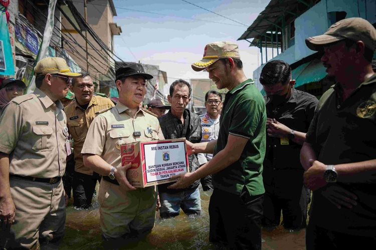

Berita Hari Ini
Dinas Kesehatan Provinsi DKI Jakarta Gelar Forum Pra Rapat Kerja Kesehatan Daerah Tahun 2025
Baca Berita ...Kepala Dinas Kesehatan DKI Jakarta Dampingi Menteri Kesehatan Tinjau Cek Kesehatan Gratis (CKG) untuk Mitra Driver Online
Baca Berita ...
Kepala Dinas Kesehatan DKI Jakarta Dampingi Wakil Gubernur Resmikan Gedung Puskesmas Pancoran
Baca Berita ...
Penilaian Portofolio dan Pembekalan CAT untuk Jabatan Fungsional Kesehatan Periode April 2025
Baca Berita ...Dinas Kesehatan Gelar Monitoring PSN dan Lisolisasi Pasca Banjir di RW 01 Rawa Buaya
Baca Berita ...

Dinas Kesehatan Provinsi DKI Jakarta Kerahkan Tim Dukungan Kesehatan untuk Korban Banjir
Baca Berita ...Dukung Gizi Seimbang untuk Ibu dan Anak, Kepala Dinas Dampingi Wakil Gubernur Hadiri Sarapan Bergizi
Baca Berita ...